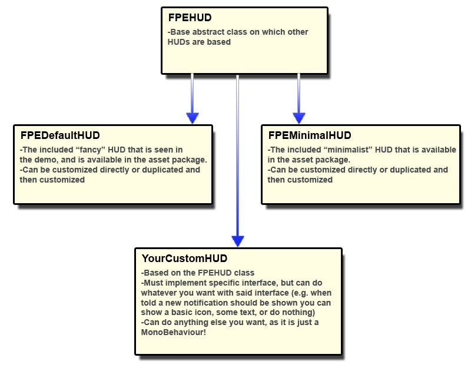

The core UI consists of some basic information and feedback. Depending on what the player is looking at, what they are holding, etc. the UI changes.
The FPEHUD class is a base class that provides a guaranteed set of functions to interface with FPEInteractionManagerScript. For example, when the player picks up a new object with an Attached Note, the FPEHUD is told. However, each HUD can do whatever it wants with that information. For example, the FPEDefaultHUD displays the note title and some animated text in the bottom center of the screen. But FPEMinimalHUD displays only a note icon in the top left of the screen. Your custom HUD could do some combination or something different entirely. It's up to you!
The default HUD (FPEDefaultHUD.cs and FPEDefaultHUD.prefab) provides some basic information and visualization for all key interactions.
By default, the neutral UI (when player is not looking at any Interactable object) is fairly minimal, as shown below:
But, when the player is holding an Inventory Item, and looking at an Activate type object:

And when the player is examining an object in their hand, the UI is hidden entirely, as shown below:

The core UI elements are layed out below in detail along with a visual representation of their on screen context and meaning:

| Reticle (A) | The reticle Image reacts to interaction possibilities. When the reticle is over top of an Interactable object, it changes to indicate the interaction is available. |
| InteractionTextLabel (B) | This Text element content changes based on the Interactable item, and the context of that interaction. |
| Control Hints (e.g. UndockHint, etc.) (C) | These Text and Image hints use the FPEUIHint component to show and hide themselves, as well as change text based on interaction context and available actions. |
| NotificationLabel (D) | This Text element is shown when the player retrieves an Attached Note. |
| AudioDiarySkipHintLabel (E) | This Text and Image element displays the 'skip diary' option to the player. It only appears when a diary is playing, and disappears when the diary is skipped or finishes playing. |
| AudioDiaryTitleLabel (F) | This Text element displays the title of the currently playing Audio Diary, along with some optional pre- and post-text. |
The JournalBackground contains Text and Image elements used in displaying and reading Journal pages. It is only shown when the player interacts with a Journal.
| JournalPage (G) | The Image element that houses each Journal Page as defined in the Inspector. |
| JournalBackground (H) | This Image element simply provides a black background to support the overall UI design. |
| NextButton (I) | This button moves the Journal forward one page (if allowed). |
| PreviousButton (J) | This button moves the Journal back one page (if allowed). |
| CloseIndicator (K) | This Image element displays a button hint showing how the journal can be closed. |
In addition to the secondary FPEMinimalHUD script and prefab, you can completely customize the experience by making your own HUD.
To create your own custom HUD, create a new class and call it MyCustomHUD, as an extension of the FPEHUD class. Implement the required class functions (e.g. initialize(), updateHUD(), etc. and add any other functionality you wish.
All HUD information is gathered and stored inside the FPEHUDData class. An instance of this class is created and updated by FPEInteractionManagerScript, and FPEHUD fetches that data every frame and refreshes itself based on any relevant changes. If you want to add new types of interactions or other data to this class that you want your custom HUD to use, you can! Here's how:
That's it! You're done.